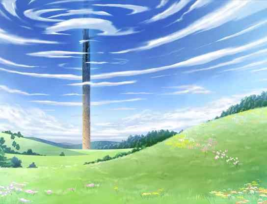

这里是一点毛玻璃特效上的文字，这里是一点毛玻璃特效上的文字，这里是一点毛玻璃特效上的文字
介绍
《CSS揭秘》中一些例子的实现，具体如何实现请看控制台或者源代码。
第一章：引言
第二章：背景与边框
1.半透明边框
这里是一些随便的文字
2.多重边框
box-shadow
outLine
3.背景定位
4.边框内圆角
这里是一些随便的文字
5.条纹背景
6.复杂的图案
7.伪随机背景
8.连续的图形边框
第三章：形状
自适应的椭圆
平行四边形
这里有字
菱形图片

菱形图片的动画效果（鼠标放置）
切角效果
Next
梯形标签页样式
Color
简单的饼图
keyframes step次数是frames每次的变换，如果是50%变一次 step(1,end)那就0跳到50变一次再从50到100再变一次
第四章：视觉效果
单侧投影
不规则投影
染色效果

毛玻璃效果
折角效果（使用less方便）
文字行的斑马条纹 与波浪线示例
xswl
i am a people abcdefghijklmnggggggggggg temptation i am a good people temptation temptation temptation
文字效果
笑
笑
鼠标放置图片移动